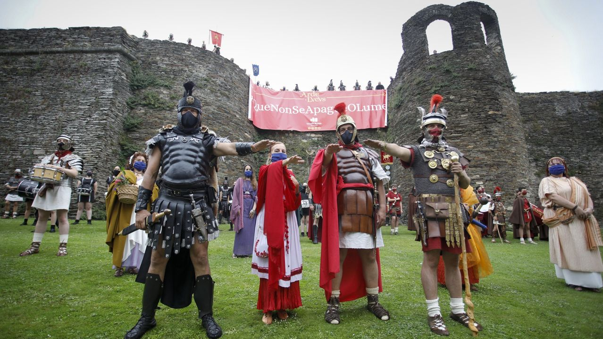

OCIO
ARDE LVCVS
Lugo vuelve a sus raíces romanas para rememorar la historia y la cultura de sus gentes. Una fiesta que ha sido declarada de Interés Turístico Nacional. La fiesta de Arde Lucus tiene el objetivo de rememorar la fundación de la ciudad de Lugo a través de la recreación de su pasado romano. Durante tres días, Lugo vuelve a ser Lucus Augusti, una destacada urbe de la Gallaecia romana en la que se desarrollan todo tipo de actividades lúdicas y culturales. Ligada al solsticio de verano, la Muralla de la ciudad y la Praza Maior cobran un papel relevante en esta fiesta, pues ellas se convierten en el escenario idóneo para trasladarse en el tiempo hasta el siglo I. Las gentes que habitan en la ciudad también se unen a esta festividad, tomando las calles vestidos con ropajes romanos o castreños para simular que hemos vuelto unos siglos atrás.

SAN FROILÁN
Las multitudinarias fiestas del San Froilán son las más hermosas del otoño gallego, dijo Álvaro Cunqueiro en su tiempo. Y no exageraba: en realidad, hoy se puede decir que son las más hermosas de todas las estaciones en Galicia. El cinco de octubre San Froilán, el amigo de los lobos, es el pretexto para unos festejos en los que Lugo, siempre ciudad abierta, es más abierta que nunca. Miles y miles de personas acuden a la vieja ciudad, no sólo de los alrededores, no solo de toda Galicia, sino de fuera de ella, y muy especialmente de Asturias y León. El Domingo das Mozas, el siguiente al día del Patrón, es un verdadero río de gente, que siempre parece que no cabe y siempre acaba cabiendo. Y además las fiestas del San Froilán son una de las mejores ocasiones para conocer el Lugo monumental, concentrado en el casco histórico, que del 4 al 12 de octubre, vestido de fiesta, adquiere un esplendor especial, teñido con la luz y con los colores del otoño.
DE TAPAS POR LUGO
Hay lugares y planes que le hacen a uno más sencilla la vuelta al cole. Como Lugo y sus tapas gratis. En esta ciudad con un pasado romano visible y visitable –ahí dejamos su muralla, su catedral o sus termas– tienen la sana costumbre, desde siempre, de agasajar al cliente que pide algo en un bar con un completo surtido de tapas frías y calientes. "Lo de las tapas en Lugo es desde siempre, hace 50 años ya se hacía. Aquí en Lugo, todo el mundo en hostelería da tapas", nos cuenta Daniel Romay, dueño de la 'Taberna Daniel', en la zona de vinos. Nadie sabe a ciencia cierta qué pasaría si un bar abre y no saca tapas. Suponemos, para regocijo de todos, que nadie se arriesga. Ni los mas tradicionales, ni los más modernos.